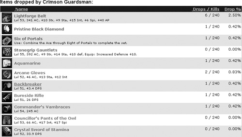
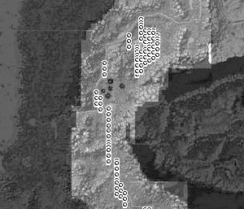

{% include JB/setup %}
{% raw %}
<div>
<a name="toppage" class="pcalibre calibre1"></a><table width="100%" border="0" cellspacing="0" cellpadding="0" class="sfbody"><tr valign="top" class="calibre2"><td class="calibre3"><a name="MainContent" class="pcalibre calibre1"></a><table width="95%" class="sfbody"><tr class="calibre2"><td class="pcalibre1 v"><!--Copyright (c) 2002 Safari Tech Books Online--><table width="100%" border="0" cellspacing="0" cellpadding="2" class="calibre4"><tr class="calibre2"><td valign="middle" class="v1 pcalibre1" height="5"></td></tr><tr class="calibre2"><td valign="middle" class="v1 pcalibre1"><table cellpadding="0" cellspacing="0" border="0" width="100%" class="calibre4"><tr class="calibre2"><td class="calibre6"><span class="calibre7"> </span>
                   
                  <span class="calibre7">   </span>
             <span class="calibre7"> </span></td></tr></table></td><td class="calibre8"/><td valign="middle" class="v2 pcalibre1"> 
           
          <span class="calibre7"><a target="_self" href="ch05lev1sec4.html" title="Previous section" class="pcalibre calibre1"></a></span>
				
				 
				
				<span class="calibre7"><a target="_self" href="ch05lev1sec6.html" title="Next section" class="pcalibre calibre1"></a></span></td></tr></table><div id="section" class="calibre15"><table width="100%" border="0" cellspacing="0" cellpadding="0" class="calibre4"><tr class="calibre2"><td valign="top" class="calibre8"><a href="10061538.html" class="pcalibre calibre1"></a>Security Game Programming Networking Programming Greg Hoglund Gary McGraw Addison Wesley Professional Exploiting Online Games: Cheating Massively Distributed Systems<a name="ch05lev1sec5" class="pcalibre calibre1"></a>
<h3 id="title-IDATTQAH" class="docSection1Title">Monitoring Drops and Respawns</h3>
<p class="docText">Monsters in WoW and other online MMORPGs often drop interesting items when they are killed, and players are free to pick up these items. This is one way that game minders distribute things to the masses. The term <span class="docEmphasis">drop</span> can refer to anything that a monster carries, but it is usually reserved for items that have value. Monsters drop low-value items consistently and with high probability. And, as you might imagine, they drop special items of high value with much lower probability.</p>
<p class="docText">This behavior makes drop rates for various monsters a metric of interest. Several Web sites are devoted to tracking drop rates for all known items and monsters (see &lt;<a class="pcalibre6 pcalibre5 calibre1" target="_blank" href="http://www.thottbot.com">http://www.thottbot.com</a>&gt; for one example). <a class="pcalibre6 pcalibre5 calibre1" href="#ch05fig07">Figure 5-7</a> shows a screenshot of various drop rates for WoW monsters. These same sites also track locations where monsters appear in the game (<a class="pcalibre6 pcalibre5 calibre1" href="#ch05fig08">Figure 5-8</a>).</p>
<a name="ch05fig07" class="pcalibre calibre1"></a><p class="calibre28"><center class="calibre29">
<h5 class="docFigureTitle">Figure 5-7. Drop rates for a certain monster in WoW. (From &lt;<a class="pcalibre6 pcalibre5 calibre1" target="_blank" href="http://www.goblinworkshop.com/creatures/crimson-guardsman.html">http://www.goblinworkshop.com/creatures/crimson-guardsman.html</a>&gt;.)</h5>
</center></p><p class="docText"><div class="v8 pcalibre3 pcalibre2"><a target="_blank" href="fig05-07_alt.jpg" class="pcalibre calibre20">[View full size image]</a></div></p>
<br class="calibre15"/>
<a name="ch05fig08" class="pcalibre calibre1"></a><p class="calibre28"><center class="calibre29">
<h5 class="docFigureTitle">Figure 5-8. Locations associated with monsters with given drop rates. (From &lt;<a class="pcalibre6 pcalibre5 calibre1" target="_blank" href="http://www.goblinworkshop.com/creatures/arei.html">http://www.goblinworkshop.com/creatures/arei.html</a>&gt;.)</h5>
</center></p><p class="docText">
</p>
<br class="calibre15"/>
<p class="docText"><a name="iddle1053" class="pcalibre calibre1"></a>Special drops are of particular interest to gamers. They include such items as excellent weaponry or armor, special recipes, or ingredients for a magic recipe. Certain ingredients for a recipe might be hard to find in the game and thus very expensive at the market. Farming rare items can make your character a great deal of money in the game.</p>
<p class="docText">The problem with drops is that you never know for sure if a creature will drop something. Fortunately, in some online games, the client program may already know what a given monster might drop (and might even perform the calculation itself to determine whether the drop occurs). If this is the case, a cheater has a distinct advantage in the game because the cheater can pick and choose targets knowing in advance that a monster will drop something of value.</p>
<p class="docText">In WoW, things work a bit differently—only after a kill will the database be queried and a drop be calculated. However, the game client software may have access to this information ahead of time since the monster will have a copy of the special item, say, a weapon, in its inventory. In this case, the prior knowledge that the monster carries the weapon is sent to the client program. Sometimes, the weapon in question might even be visibly carried by the monster, tipping you off that it will drop.</p>
<p class="docText">Knowledge of this sort is power.</p>
<p class="docText">Once a resource is taken or a monster is killed, the game server will usually mark the time that the resource was removed. Then it will periodically cycle through the world looking for respawns. This is akin to running a tasking loop on the server that looks something like this:</p>
<div class="docText1"><pre class="calibre43">While(running)
{
       TASK t = GetTaskFromQueue( );
       t.Run( );
       Sleep(1);
}
</pre></div><br class="calibre15"/>
<p class="docText">The task in question can be any work the server needs to perform. One such task might be to scan for respawns. Eventually, the task runs, performing a database query such as this:</p>
<div class="docText1"><pre class="calibre43">"SELECT * FROM mob_instances WHERE alive=0
AND killtime &gt; (NOW - respawn_rate)"
</pre></div><br class="calibre15"/>
<p class="docText">Thus, a series of database rows are obtained, and the task can go about respawning all of the instances.</p>
<p class="docText">The respawn rate for some mobs may in some cases be set very low. If such a mob is selected, the resulting respawn points are high (see the query if this seems confusing). High-speed respawn points can be used in conjunction with a macro for fast experience point gathering or other kinds of drop farming.</p>
<a href="10061538.html" class="pcalibre calibre1"></a><ul class="calibre18"></ul></td></tr></table><table width="100%" border="0" cellspacing="0" cellpadding="2" class="calibre4"><tr class="calibre2"><td valign="middle" class="v1 pcalibre1" height="5"></td></tr><tr class="calibre2"><td valign="middle" class="v1 pcalibre1"><table cellpadding="0" cellspacing="0" border="0" width="100%" class="calibre4"><tr class="calibre2"><td class="calibre6"><span class="calibre7"> </span>
                   
                  <span class="calibre7">   </span>
             <span class="calibre7"> </span></td></tr></table></td><td class="calibre8"/><td valign="middle" class="v2 pcalibre1"> 
           
          <span class="calibre7"><a target="_self" href="ch05lev1sec4.html" title="Previous section" class="pcalibre calibre1"></a></span>
				
				 
				
				<span class="calibre7"><a target="_self" href="ch05lev1sec6.html" title="Next section" class="pcalibre calibre1"></a></span></td></tr></table><table width="100%" border="0" cellspacing="0" cellpadding="2" class="calibre4"><tr class="calibre2"><td valign="top" class="calibre14"><span class="calibre7"></span></td></tr></table></div><!--IP User 2--></td></tr></table></td><td class="calibre3">
                         
                      </td></tr><tr class="calibre2"><td colspan="3" valign="bottom" class="calibre3"><br class="calibre15"/><p class="v5 pcalibre1"></p><br class="calibre15"/></td></tr></table></div>

{% endraw %}

